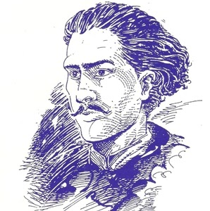

Tragédia no Lar
Peça de Teatro no Festival da Consciência Negra
Resumo
A peça Tragédia no Lar expõe os dilemas de uma família em um contexto de opressão social no Brasil do século XIX. Com uma visão crítica, denuncia o sistema escravocrata e a luta por liberdade e dignidade humana.
Curiosidades
Tragédia no Lar foi escrita por Castro Alves quando ele ainda era muito jovem, abordando de forma inovadora questões sociais complexas, como a escravidão e o racismo. A obra continua sendo um marco literário até hoje.
Temas
A peça explora temas como liberdade, resistência, e os direitos humanos, enfrentando a opressão racial e social. Castro Alves denuncia a desigualdade, deixando uma mensagem poderosa e atemporal de luta por justiça.

Contexto Histórico
Escrita no período de transição entre o romantismo e o realismo no Brasil, Tragédia no Lar reflete o momento histórico de luta pela abolição da escravidão, com Castro Alves sendo uma voz ativa na denúncia das injustiças sociais.

Sobre o Autor
Frederico de Castro Alves foi um dos maiores poetas brasileiros, conhecido por sua postura abolicionista e seu ativismo na luta pela liberdade. Sua obra é um símbolo da resistência contra o racismo e a opressão.